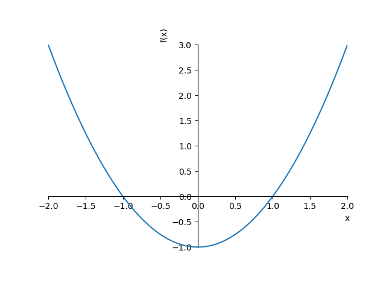

●Hello, SymPy!!
- SymPy は Python で数式処理システムのような記号計算を行うためのライブラリ
- 記号計算とは、数学で数式を計算するのと同様な計算を行うこと
- たとえば、f(x) = x2 の微分は f'(x) = 2x になるが、SymPy を使うと同じように計算できる
>>> import sympy as sy
>>> x = sy.Symbol('x')
>>> f = x**2 + 2*x + 1
>>> f
x**2 + 2*x + 1
>>> g = f.diff()
>>> g
2*x + 2
SymPy には多くの機能が実装されている
本ページでは基本的な使い方を簡単に説明する
SymPy のインストール
- Windows で python3 がインストールされている場合、pip を使うと簡単
- シェル上でコマンド pip install sympy を実行する
- mpmath-1.0.0 と sympy-1.2 がインストールされる
- mpmath は任意精度の浮動小数点数を扱うライブラリ
- UNIX 系 OS で python3 の場合は pip3 を使う
- Ubuntu 系 OS の場合、pip3 は sudo apt install python3-pip でインストールできる
- あとは pip3 install sympy を実行するだけ
- Cygwin の場合、Python のカテゴリーをすべてインストールするのが簡単 (pip3 もインストールされる)
matplotlib がインストールされている場合、プロットは matplotlib を使って行われる
>>> f = x**2 - 1
>>> sy.plotting.plot(f, (x, -2, 2))
<sympy.plotting.plot.Plot object at 0x0000020B1F37D588>

Matplotlib のインストール
- Windows の場合、pip install matplotlib で必要なパッケージをすべてインストールできる
- UNIX 系 OS の場合は pip3 を使ってインストールする
- ただし、Python3 / Tkinter がインストールされていないと動作しない
- Ubuntu 系 OS ではコマンド sudo apt install python3-tkinter で Tkinter をインストールできる
- Cygwin の場合、基本的には pip3 でインストールできる (必要なものが揃っているならば)
- 実際にプロットするには X サーバーが必要
- X11 カテゴリーをすべてインストールするのが簡単
- Windows 10 の場合、スタートボタン -> Cygwin-X -> XWin Server を実行する
- または Cygwin Terminal でコマンド run xwin -multiwindow を実行する
- Cygwin Terminal で GUI アプリケーションを実行する場合、環境変数 DISPLAY の設定が必要
$ export DISPLAY=:0.0
bash の設定ファイル .bashrc に書き込んでおくとよい
参考 URL
- SymPy, (本家)
- Welcome to SymPy’s documentation!, (本家)
- 3.2. Sympy : Python での代数計算, (Scipy Lecture Notes)
- Pythonで数学の勉強：代数基礎(数式と関数), (@tibigame さん)
- SymPy - Wikipedia
●SymPy の基本
- 数
- SymPy の数は整数 (多倍長整数)、有理数、浮動小数点数 (任意精度)、複素数
- 整数は Integer() で、浮動小数点数 Float() で生成できるが、Python の整数と浮動小数点数を使うこともできる
- Python の整数と浮動小数点数は自動的に SymPy のそれに変換される
- 有理数は Rational(p, q), p: 分子, q: 分母, p, q は多倍長整数
- Python3 の場合、演算子 / は整数同士の割り算
- SymPy で a, b が整数 (Integer) の場合、a / b は有理数になる
- SymPy の虚数単位は I になる
- Python には複素数を表すデータ型 (complex) があるが SymPy にはない
- SymPy は虚数単位を含む数式を複素数として扱う
- 基本的な演算は Python と同じ (+, -, *, /, //, %, **)
- 定数と数学関数
- SymPy では特殊な定数 (E, pi, oo) や数学関数を数式として扱う
- E : 自然対数の底 (ネイピア数)
- pi : 円周率
- oo : 無限大
>>> import sympy as sy
>>> sy.Integer(12345)
12345
>>> sy.Integer('12345')
12345
>>> type(sy.Integer('12345'))
<class 'sympy.core.numbers.Integer'>
>>> sy.Float(1.2345)
1.23450000000000
>>> sy.Float('1.2345')
1.23450000000000
>>> type(sy.Float('1.2345'))
<class 'sympy.core.numbers.Float'>
>>> sy.Rational(1, 2)
1/2
>>> sy.Integer(1) / sy.Integer(3)
1/3
>>> sy.Rational(1, 2) + sy.Rational(1, 3)
5/6
>>> 1 + 2 * sy.I
1 + 2*I
>>> 1.1 + 2.2 * sy.I
1.1 + 2.2*I
>>> sy.sqrt(2)
sqrt(2)
>>> sy.sqrt(4)
2
>>> sy.sqrt(8)
2*sqrt(2)
>>> sy.pi
pi
>>> sy.E
E
>>> sy.oo
oo
- 数式の出力
- init_printing() を実行すると、使用しているコンソールに適した方法で数式を表示する
- SymPy は LaTex のフォーマットで数式を出力することができる
- それを受け付けるコンソール (たとえば IPython QTConsole など) であれば、美しい数式が表示される
- 本家の SymPy Live で公開されている Online Shell を試してみるとよい
- そうでなければ unicode pretty printer が使用される
- init_printing() の引数に use_unicode=False を指定すると ascii pretty printer になる
>>> sy.init_printing()
>>> sy.sqrt(2)
√2
>>> 1 / sy.sqrt(2)
√2
──
2
>>> sy.pi
π
>>>sy.init_printing(use_unicode=False)
>>>ssy.sqrt(2)
___
\/ 2
>>>s1 / sy.sqrt(2)
___
\/ 2
-----
2
>>> sy.pi
pi
- 変数の定義
- SumPy の場合、「シンボル (symbol)」を使って数式の変数を表す
- プログラミングにおいて、シンボルというデータ型は「記号」を意味するのが一般的
- Lisp / Scheme の世界では、シンボルは基本的なデータ型のひとつ
- シンボルは Symbol(), symbols(), var() などで生成する
- 引数にはシンボルの名前 (文字列) を渡す
- Symbol('name') => symbol
- symbols('name1 name2 ... nameN') => symbol1, symbol2, ..., symbolN
- var('name1 name2 ... nameN') => symbol1, symbol2, ..., symbolN
- Symbol() はシンボルをひとつ生成する
- symbols() と var() は複数のシンボルを生成する
- 引数の文字列を空白文字やカンマ (,) で区切る
- コロン (:) を使うと複数のシンボルを簡単に指定できる
- たとえば、a:z とすると a から z までの 26 個のシンボルを生成する
- x:10 は x0 から x9 まで, x1:6 は x1 から x5 までのシンボルを生成する
- 生成したシンボルは Python の変数に格納して使用する
- シンボル名と Python の変数名は同じにしたほうがわかりやすい
- var() は同じ名前の大域変数に生成したシンボルを格納する
>>> x, y, z = sy.symbols('x y z')
>>> x
x
>>> y
y
>>> z
z
>>> x + 2*y + 3*z
x + 2⋅y + 3⋅z
>>> (x + y) ** 2
2
(x + y)
>>> (x + y + z) ** 3
3
(x + y + z)
>>> x**3 + 2*x**2 + 3*x + 4
3 2
x + 2⋅x + 3⋅x + 4
>>> sy.sqrt(x)
√x
>>> sy.sqrt(x*x + y*y)
_________
╱ 2 2
╲╱ x + y
>>> sy.var('a:c')
(a, b, c)
>>> a
a
>>> b
b
>>> c
c
>>> sy.var('x1:4')
(x1, x2, x3)
>>> x1
x1
>>> x2
x2
>>> x3
x3
- 数式の展開と因数分解
- 数式 expr の展開は関数 expand() で、因数分解は関数 factor() で行うことができる
- 数式の展開は目的別の関数も用意されている
- expand_power_exp(), expand_power_base(), 指数を含む式の展開
- expand_trig(), 三角関数を含む式の展開
- expand_log(), 対数関数を含む式の展開
- この他にもいろいろある
- 詳細はリファレンス Simplify を参照
>>> sy.expand((x + y)**2)
2 2
x + 2⋅x⋅y + y
>>> sy.expand((x + y + z)**2)
2 2 2
x + 2⋅x⋅y + 2⋅x⋅z + y + 2⋅y⋅z + z
>>> sy.expand((x + y)**3)
3 2 2 3
x + 3⋅x ⋅y + 3⋅x⋅y + y
>>> a = sy.expand((x + y)**4)
>>> a
4 3 2 2 3 4
x + 4⋅x ⋅y + 6⋅x ⋅y + 4⋅x⋅y + y
>>> sy.factor(a)
4
(x + y)
>>> sy.factor(x**2 - 1)
(x - 1)⋅(x + 1)
>>> sy.factor(x**2 - 2*x + 1)
2
(x - 1)
>>> sy.factor(x**3 + y**3)
⎛ 2 2⎞
(x + y)⋅⎝x - x⋅y + y ⎠
>>> sy.expand_power_exp(x**(y+z))
y z
x ⋅x
>>> (x*y)**z
z
(x⋅y)
>>> sy.expand_power_base((x*y)**z)
z
(x⋅y)
>>> sy.expand_power_base((x*y)**z, force=True)
z z
x ⋅y
>>> sy.expand_trig(sy.sin(x + y))
sin(x)⋅cos(y) + sin(y)⋅cos(x)
>>> sy.expand_trig(sy.cos(x + y))
-sin(x)⋅sin(y) + cos(x)⋅cos(y)
>>> sy.expand_trig(sy.sin(2*x))
2⋅sin(x)⋅cos(x)
>>> sy.expand_trig(sy.cos(2*x))
2
2⋅cos (x) - 1
>>> sy.expand_log(sy.log(x*y))
log(x⋅y)
>>> sy.expand_log(sy.log(x*y), force=True)
log(x) + log(y)
>>> sy.expand_log(sy.log(x/y))
⎛x⎞
log⎜─⎟
⎝y⎠
>>> sy.expand_log(sy.log(x/y), force=True)
log(x) - log(y)
>>> sy.expand_log(sy.log(x**2))
⎛ 2⎞
log⎝x ⎠
>>> sy.expand_log(sy.log(x**2), force=True)
2⋅log(x)
>>> sy.var('x1 y1 z1', positive=True)
(x₁, y₁, z₁)
>>> sy.expand_log(sy.log(x1*y1))
log(x₁) + log(y₁)
>>> sy.expand_log(sy.log(x1/y1))
log(x₁) - log(y₁)
>>> sy.expand_log(sy.log(x1**2))
2⋅log(x₁)
- 数式を展開できない場合は、引数の数式をそのまま返す
- たとえば、log(x) の定義域は x > 0 だが、変数 x の範囲が負数を含んでいると数式を展開できない
- シンボルを生成するとき、positive=True を指定すると、その変数がとりうる値は正数に限定される
- または、force=True を指定すると、強制的に式を展開することができる
- 数式の簡約化
- 数式の簡約化は関数 simplify() を使うと簡単
- 目的別の関数も用意されている
- powsimp(), 指数の簡約化
- trigsimp(), 三角関数を含む式の簡約化
- logcombine(), 対数関数を含む式の簡約化
- この他にもいろいろある
- 詳細はリファレンス Simplify を参照
>>> (x**2 + 2*x + 1)/(x + 1)
2
x + 2⋅x + 1
────────────
x + 1
>>> sy.simplify((x**2 + 2*x + 1)/(x + 1))
x + 1
>>> sy.simplify((x**2 - 1)/(x + 1))
x - 1
>>> x**y * x**z
y z
x ⋅x
>>> sy.powsimp(x**y * x**z)
y + z
x
>>> x**y / x**z
y -z
x ⋅x
>>> sy.powsimp(x**y / x**z)
y - z
x
>>> sy.sin(x)**2 + sy.cos(x)**2
2 2
sin (x) + cos (x)
>>> sy.trigsimp(sy.sin(x)**2 + sy.cos(x)**2)
1
>>> sy.sin(x)*sy.cos(y) + sy.cos(x)*sy.sin(y)
sin(x)⋅cos(y) + sin(y)⋅cos(x)
>>> sy.trigsimp(sy.sin(x)*sy.cos(y) + sy.cos(x)*sy.sin(y))
sin(x + y)
>>> sy.cos(x)*sy.cos(y) + sy.sin(x)*sy.sin(y)
sin(x)⋅sin(y) + cos(x)⋅cos(y)
>>> sy.trigsimp(sy.cos(x)*sy.cos(y) + sy.sin(x)*sy.sin(y))
cos(x - y)
>>> 1 + sy.tan(x)**2
2
tan (x) + 1
>>> sy.trigsimp(1 + sy.tan(x)**2)
1
───────
2
cos (x)
>>> sy.log(x) + sy.log(y)
log(x) + log(y)
>>> sy.logcombine(sy.log(x) + sy.log(y))
log(x) + log(y)
>>> sy.logcombine(sy.log(x) + sy.log(y), force=True)
log(x⋅y)
>>> sy.log(x) - sy.log(y)
log(x) - log(y)
>>> sy.logcombine(sy.log(x) - sy.log(y))
log(x) - log(y)
>>> sy.logcombine(sy.log(x) - sy.log(y), force=True)
⎛x⎞
log⎜─⎟
⎝y⎠
>>> x * sy.log(y)
x⋅log(y)
>>> sy.logcombine(x * sy.log(y))
x⋅log(y)
>>> sy.logcombine(x * sy.log(y), force=True)
⎛ x⎞
log⎝y ⎠
- 数式の評価
- 数式 expr の変数に値を代入するにはメソッド subs() を使う
expr.subs(変数, 値) => 値 or 数式
expr.subs([(変数1, 値1), (変数2, 値2), ...]) => 値 or 数式
expr.subs({変数1: 値1, 変数2: 値2, ...}) => 値 or 数式
値は数だけではなく他の変数や数式でもかまわない
数式 expr を評価して浮動小数点数を得るにはメソッド evalf() または関数 N() を使う
expr.evalf([n]) => float_number
sympy.N(expr, [n]) => float_number
引数 n を指定すると n 桁の浮動小数点数 (Float) を返す
>>> a = x**2
>>> a
2
x
>>> a.subs(x, 10)
100
>>> a.subs(x, 1.2345)
1.52399025000000
>>> a.subs(x, y + z)
2
(y + z)
>>> a.subs(x, sy.sqrt(2))
2
>>> b = a.subs(x, y + z)
>>> b.subs({y: sy.sqrt(2), z: sy.sqrt(3)})
2
(√2 + √3)
>>> sy.pi.evalf()
3.14159265358979
>>> sy.N(sy.pi, 50)
3.1415926535897932384626433832795028841971693993751
>>> sy.sqrt(2).evalf(50)
1.4142135623730950488016887242096980785696718753769
>>> b.subs({y: sy.sqrt(2), z: sy.sqrt(3)}).evalf()
9.89897948556636
>>> b.subs({y: sy.sqrt(2), z: sy.sqrt(3)}).evalf(20)
9.8989794855663561964
●多項式
>>> sy.div(x**3 + x**2 - 4*x + 1, x - 2)
⎛ 2 ⎞
⎝x + 3⋅x + 2, 5⎠
>>> sy.div(x**3 - x**2 - 4*x + 4, x - 2)
⎛ 2 ⎞
⎝x + x - 2, 0⎠
>>> (x**3 - x**2 - 4*x + 4) / (x - 2)
3 2
x - x - 4⋅x + 4
─────────
x - 2
>>> sy.cancel((x**3 - x**2 - 4*x + 4) / (x - 2))
2
x + x - 2
>>> sy.cancel((x**2 + 2*x + 1) / (x**2 + x))
x + 1
───
x
>>> 1/(x - 1) + 1/(x - 2)
1 1
─── + ───
x - 1 x - 2
>>> sy.cancel(1/(x - 1) + 1/(x - 2))
2⋅x - 3
───────
2
x - 3⋅x + 2
>>> sy.apart((2*x - 3)/(x**2 - 3*x + 2))
1 1
─── + ───
x - 1 x - 2
>>> sy.apart((6*x**2 + x - 17) / (x**3 - 7*x -6))
1 3 2
─── + ─── + ───
x + 2 x + 1 x - 3
>>> sy.apart((x + 1) / (x**4 + x**2))
x + 1 1 1
- ─── + ─ + ──
2 x 2
x + 1 x
>>> x**2 + y*x + z*x + y*z
2
x + x⋅y + x⋅z + y⋅z
>>> sy.collect(x**2 + y*x + z*x + y*z, x)
2
x + x⋅(y + z) + y⋅z
>>> sy.collect(x**2 + y*x + z*x + y*z, x).coeff(x, 2)
1
>>> sy.collect(x**2 + y*x + z*x + y*z, x).coeff(x, 1)
y + z
>>> sy.collect(x**2 + y*x + z*x + y*z, x).coeff(x, 0)
y⋅z
- 方程式の求解には関数 solveset(expr, var) を使う
- 数式 expr が 0 になる変数 var の値を求める
- キーワード引数 domain で領域を指定できる (Complexes が default)
- たとえば、x2 + 1 = 0 の解は I, -I になるが、実数では存在しない
- 解が存在しない場合は空集合を表す EmptySet() を返す
- SymPy の集合 (Set) は Python の set とは違う (あとで説明する)
- SymPy には特別な集合を表すクラスがあらかじめ定義されている
- EmptySet, 空集合
- UniversalSet, 全体集合
- Naturals, 自然数全体の集合
- Naturals0, 零と自然数全体の集合
- Integers, 整数全体の集合
- Reals, 実数全体の集合
- Complexes, 複素数全体の集合
- これらのクラスのオブジェクト (シングルトン) は sympy.S の同名の変数に格納されている
- 関数 roots(expr, var) は解とその個数を辞書に格納して返す
- 重根があるときは便利
>>> sy.solveset(x**2 - 1, x)
{-1, 1}
>>> sy.solveset(x**2 + 1, x)
{-ⅈ, ⅈ}
>>> sy.S.UniversalSet
UniversalSet()
>>> sy.S.EmptySet
∅
>>> sy.S.Complexes
ℂ
>>> sy.S.Reals
ℝ
>>> sy.S.Integers
ℤ
>>> sy.S.Naturals
ℕ
>>> sy.solveset(x**2 + 1, x, domain=sy.Reals)
∅
>>> sy.var('a b c')
(a, b, c)
>>> sy.solveset(a*x**2 + b*x + c, x)
⎧ _____________ _____________ ⎫
⎪ ╱ 2 ╱ 2 ⎪
⎨ b ╲╱ -4⋅a⋅c + b b ╲╱ -4⋅a⋅c + b ⎬
⎪- ── - ────────, - ── + ────────⎪
⎩ 2⋅a 2⋅a 2⋅a 2⋅a ⎭
>>> sy.solveset(x**3, x)
{0}
>>> sy.roots(x**3, x)
{0: 3}
>>> sy.solveset(x**3 - 4*x**2 + 5*x - 2, x)
{1, 2}
>>> sy.roots(x**3 - 4*x**2 + 5*x - 2, x)
{1: 2, 2: 1}
- 連立一次方程式は関数 linsolve([expr1, expr2, ...], [var1, var2, ...]) を使って解く
- 式と変数はタプルに格納して渡してもよい
- 鶴亀算
- 鶴と亀、合わせて 100 匹いる。足の合計が 272 本のとき、鶴と亀はそれぞれ何匹ずついるか。
- 鶴と亀とトンボが合わせて 10 匹いる。足の合計が 38 本で羽の合計が 14 枚であるとき、鶴と亀とトンボはそれぞれ何匹ずついるか。(トンボの足は 6 本で羽は 4 枚)
- 鶏と犬とタコ、合わせて 24 匹が台所にいる。足の合計が 102 本のとき、鶏、犬、タコはそれぞれ何匹ずついるか。
- 解答
- x + y = 100, 2x + 4y = 272 を解く
>>> sy.linsolve([x + y - 100, 2*x + 4*y - 272], [x, y])
{(64, 36)}
- x + y + z = 10, 2x + 4y + 6z = 38, 2x + 4z = 14 を解く
>>> sy.linsolve([x + y + z - 10, 2*x + 4*y + 6*z - 38, 2*x + 4*z -14], [x, y, z])
{(3, 5, 2)}
- x + y + z= 24, 2x + 4y + 8z = 102 を解く
>>> sy.linsolve([x + y + z - 24, 2*x + 4*y + 8*z - 102], [x, y, z])
{(2⋅z - 3, -3⋅z + 27, z)}
- solveset() や linsolve() の他にも、方程式の解を求める関数 solve() がある
●微積分
- 微分
- 微分は関数 diff(expr, var, [n]) で行う
- 引数 n に数値を指定すると高階微分になる
- または、diff(expr, var, var, ...) のように変数 var の後に同じ変数を指定すると高階微分になる
- 多変数関数の微分 (偏微分) も diff(expr, var1, var2, ...) で OK
- Derivative() は diff() と引数が同じで、評価前の状態を保持するオブジェクトを返す
- メソッド doit() で微分を実行する
>>> sy.var('n x y z')
(n, x, y, z)
>>> sy.diff(x**2, x)
2⋅x
>>> sy.diff(x**2, x, 2)
2
>>> sy.diff(x**2, x, 3)
0
>>> sy.diff(x**n, x)
n
n⋅x
──
x
>>> sy.diff(x**n, x, 2)
n
n⋅x ⋅(n - 1)
──────
2
x
>>> sy.diff(sy.log(x), x)
1
─
x
>>> sy.diff(sy.exp(x), x)
x
ℯ
>>> sy.diff(sy.sin(x), x)
cos(x)
>>> sy.diff(sy.cos(x), x)
-sin(x)
>>> sy.diff(sy.tan(x), x)
2
tan (x) + 1
>>> sy.diff(x**3*y**3*z**3, x)
2 3 3
3⋅x ⋅y ⋅z
>>> sy.diff(x**3*y**3*z**3, x, x)
3 3
6⋅x⋅y ⋅z
>>> sy.diff(x**3*y**3*z**3, x, x, y, y, z, z)
216⋅x⋅y⋅z
>>> sy.diff(x**3*y**3*z**3, x, 2, y, 2, z, 2)
216⋅x⋅y⋅z
>>> sy.Derivative((x**3 * y**3 * z**3), x, y, z)
3
∂ ⎛ 3 3 3⎞
──────⎝x ⋅y ⋅z ⎠
∂z ∂y ∂x
>>> sy.Derivative((x**3 * y**3 * z**3), x, y, z).doit()
2 2 2
27⋅x ⋅y ⋅z
>>> sy.Derivative((x**3 * y**3 * z**3), x, 2, y, 2, z, 2)
6
∂ ⎛ 3 3 3⎞
──────⎝x ⋅y ⋅z ⎠
2 2 2
∂z ∂y ∂x
>>> sy.Derivative((x**3 * y**3 * z**3), x, 2, y, 2, z, 2).doit()
216⋅x⋅y⋅z
積分
- 積分は関数 integrate(expr, var) で行う (積分定数は出力されない)
- 定積分も integrate(expr, (var, low, high)) で OK
- 二重積分も integrate(expr, (var1, l1, h1), (var2, l2, h2), ...) で OK
- Integral() は integrate() と引数が同じで、評価前の状態を保持するオブジェクトを返す
- メソッド doit() で微分を実行する
- 積分を評価できないときは Integral() を返す
>>> sy.integrate(x, x)
2
x
─
2
>>> sy.integrate(x**2, x)
3
x
─
3
>>> sy.integrate(x**3, x)
4
x
─
4
>>> sy.integrate(x, (x, 0, 1))
1/2
>>> sy.integrate(x**2, (x, 0, 1))
1/3
>>> sy.integrate(x**3, (x, 0, 1))
1/4
>>> sy.integrate(sy.exp(x), x)
x
ℯ
>>> sy.integrate(sy.exp(-x), x)
-x
-ℯ
>>> sy.integrate(sy.exp(-x), (x, 0, sy.oo))
1
>>> sy.integrate(1/x, x)
log(x)
>>> sy.integrate(sy.log(x), x)
x⋅log(x) - x
>>> sy.integrate(sy.sin(x), x)
-cos(x)
>>> sy.integrate(sy.cos(x), x)
sin(x)
>>> sy.integrate(sy.tan(x), x)
-log(cos(x))
>>> sy.integrate(4/(1 + x**2), x)
4⋅atan(x)
>>> sy.integrate(4/(1 + x**2), (x, 0, 1))
π
>>> sy.Integral(x*y**2, x, y)
⌠ ⌠
⎮ ⎮ 2
⎮ ⎮ x⋅y dx dy
⌡ ⌡
>>> sy.Integral(x*y**2, x, y).doit()
2 3
x ⋅y
───
6
>>> sy.integrate(x*y**2, (x, 0, 1), (y, 0, 1))
1/6
>>> sy.integrate(x*y**2, (x, 1 - y, 1), (y, 0, 1))
3/20
>>> sy.integrate(x**x, x)
⌠
⎮ x
⎮ x dx
⌡
極限
- 極限は関数 limit(function, var, point) で計算する
- f(x) の x -> 0 の極限は limit(f(x), x, 0) とする
- 極限の方向は第 4 引数で指定する ('+' or '-')
>>> sy.limit(x, x, sy.oo)
∞
>>> sy.limit(1/x, x, sy.oo)
0
>>> sy.limit(1/x, x, 0, '+')
∞
>>> sy.limit(1/x, x, 0, '-')
-∞
>>> sy.limit(x/(x + 1), x, sy.oo)
1
>>> sy.limit(sy.sin(x)/x, x, 0)
1
>>> sy.limit(sy.sqrt(x**2+3*x+4) - x, x, sy.oo)
3/2
テーラー (Taylor) 展開
- メソッド series() は関数 f(x) をテーラー展開する
f(x).series(var, [x0, n])
x0 を省略すると原点 (0) になる
n は最高次数を指定する
オーダー記号 O() はメソッド removeO() で削除する
>>> sy.cos(x).series(x)
2 4
x x ⎛ 6⎞
1 - ─ + ─ + O⎝x ⎠
2 24
>>> sy.sin(x).series(x)
3 5
x x ⎛ 6⎞
x - ─ + ── + O⎝x ⎠
6 120
>>> sy.exp(x).series(x)
2 3 4 5
x x x x ⎛ 6⎞
1 + x + ─ + ─ + ─ + ── + O⎝x ⎠
2 6 24 120
>>> sy.exp(x).series(x, 0, 10)
2 3 4 5 6 7 8 9
x x x x x x x x ⎛ 10⎞
1 + x + ─ + ─ + ─ + ── + ── + ── + ─── + ─── + O⎝x ⎠
2 6 24 120 720 5040 40320 362880
>>> sy.exp(x).series(x).removeO()
5 4 3 2
x x x x
── + ─ + ─ + ─ + x + 1
120 24 6 2
●集合
- Python には集合を表すデータ型 set があるが、SymPy ではクラス Set を使う
- SymPy の Set は immutable なデータ構造
- Set は基本クラスで、実際に使用するのはサブクラス
- ここでは集合の基本的な使い方を簡単に説明する
- 詳細はリファレンス Sets を参照
- 基本的な演算子とメソッド
- 和集合, +, |, union
- 積集合, &, intersect, intersection
- 差集合, -, complement (a - b は b.complement(a) と同じ)
- 対称差, ^, symmetric_difference ((a - b) | (b - a) と同じ)
- 直積集合, *, (a * b は ProductSet(a, b) と同じ)
- a ** n は a * a * ... * a (n 個の a の直積集合)
- べき集合, powerset
- 部分集合の判定, issubset, is_subset, issuperset, is_superset
- 真部分集合の判定, is_proper_subset, is_proper_superset
- 積集合 (共通集合) の有無, isdisjoint, is_disjoint
- 要素 x は集合 a に含まれているか, x.contains(a), x in a
- EmptySet は空集合を表すクラス (シングルトンは sympy.S.EmptySet)
- 属性 is_EmptySet は True (他のクラスのオブジェクトは None)
- 属性 is_iterable は False
- 関数 len() の値は 0
- UniversalSet は全体集合を表すクラス (シングルトンは sympy.S.UniversalSet)
- 属性 is_UniversalSet は True (他のクラスのオブジェクトは None)
- 属性 is_iterable は False
- 関数 len() は適用不可
>>> import sympy as sy
>>> sy.init_printing()
>>> sy.S.EmptySet
∅
>>> sy.S.EmptySet.is_EmptySet
True
>>> sy.S.EmptySet.is_iterable
False
>>> len(sy.S.EmptySet)
0
>>> sy.S.UniversalSet
UniversalSet()
>>> sy.S.UniversalSet.is_UniversalSet
True
>>> sy.S.UniversalSet.is_iterable
False
>>> sy.S.UniversalSet | sy.S.EmptySet
UniversalSet()
>>> sy.S.UniversalSet & sy.S.EmptySet
∅
Interval(s, e, left_open=False, right_open=False) => [s, e]
- 返り値は Interval のオブジェクトだが、表示には角カッコや丸カッコが用いられる
- キーワード引数 xxxx_open で xxxx 側の open / close を指定する
- (s, e), s < x < e
- [s, e), s <= x < e
- (s, e], s < x <= e
- [s, e], s <= x <= e
- または次のクラスメソッドを使う
- Ropen(s, e) => [s, e)
- Lopen(s, e) => (s, e]
- open(s, e) => (s, e)
- 端点 s, e の open / close はメソッド left_open, right_open で確認できる
- 端点 s, e には oo, -oo を指定できる
- 属性 is_iterable は False
- 関数 len() は適用不可
>>> a = sy.Interval(1, 10)
>>> a
[1, 10]
>>> a.is_iterable
False
>>> 1 in a
True
>>> 0 in a
False
>>> 10 in a
True
>>> 11 in a
False
>>> b = sy.Interval(5, 15)
>>> b
[5, 15]
>>> a & b
[5, 10]
>>> a | b
[1, 15]
>>> a - b
[1, 5)
>>> b - a
(10, 15]
>>> a ^ b
[1, 5) ∪ (10, 15]
>>> 5 in a ^ b
False
>>> 1 in a ^ b
True
>>> 10 in a ^ b
False
>>> 15 in a ^ b
True
- FiniteSet は有限個の要素を持つ集合を表すクラス
FiniteSet(item1, item2, ..., itemN) => {item1, item2., ..., itemN}
- Python の frozenset (immutable な set) とほぼ同じ
- 返り値は FiniteSet のオブジェクトだが、表示には { ... } が用いられる
- 属性 is_iterable は True (イテレータが利用できる)
- 関数 len() は要素数を返す
>>> a = sy.FiniteSet(1, 2, 3, 4)
>>> a
{1, 2, 3, 4}
>>> a.is_iterable
True
>>> for x in a: print(x)
...
1
2
3
4
>>> len(a)
4
>>> for x in range(0, 6):
... print(x, x in a)
...
0 False
1 True
2 True
3 True
4 True
5 False
>>> b = sy.FiniteSet(3, 4, 5, 6)
>>> b
{3, 4, 5, 6}
>>> a | b
{1, 2, 3, 4, 5, 6}
>>> a & b
{3, 4}
>>> a - b
{1, 2}
>>> b - a
{5, 6}
>>> a ^ b
{1, 2, 5, 6}
- 集合演算を表すクラス
- Union, 和集合
- Intersection. 積集合
- Complement, 差集合
- SymmetricDifference, 対称差
- ProductSet, 直積集合
>>> c = sy.Interval(5, 8)
>>> c
[5, 8]
>>> a | c
{1, 2, 3, 4} ∪ [5, 8]
>>> b | c
{3, 4} ∪ [5, 8]
>>> a & c
∅
>>> b & c
{5, 6}
>>> a - c
{1, 2, 3, 4}
>>> c - a
[5, 8]
>>> b - c
{3, 4}
>>> c - b
(5, 6) ∪ (6, 8]
>>> a ^ c
{1, 2, 3, 4} ∪ [5, 8]
>>> b ^ c
{3, 4} ∪ (5, 6) ∪ (6, 8]
>>> a * b
{1, 2, 3, 4} × {3, 4, 5, 6}
>>> for x in a * b: print(x)
...
(1, 3)
(1, 4)
(1, 5)
(1, 6)
(2, 3)
(2, 4)
(2, 5)
(2, 6)
(3, 3)
(3, 4)
(3, 5)
(3, 6)
(4, 3)
(4, 4)
(4, 5)
(4, 6)
>>> a * c
{1, 2, 3, 4} × [5, 8]
>>> (1, 5.5) in a * c
True
>>> (4, 8.1) in a * c
False
>>> (2.5, 6) in a * c
False
- 特別な集合を表すクラス
- Naturals, 自然数全体の集合
- Naturals0, 零と自然数全体の集合
- Integers, 整数全体の集合
- Reals, 実数全体の集合
- Complexes, 複素数全体の集合
- Range, Python の range() とよく似た集合
- インデックスによるアクセスが可能
- oo や -oo の指定もできる
- ImageSet, 写像
- ImageSet(func, xs) は集合 xs の要素に関数 func を適用した集合を表す
- 第 1 引数 func には SymPy の Lambda() を渡す
- Lambda() は Python の lambda 式とよく似ている
Lambda(x, expr) は lambda x: expr のこと
Lambda((x, y, z, ...), expr) は lambda x, y, z, ...: expr のこと
lambda 式とは違い、Lambda() の第 1 引数に渡す変数はシンボルであること
この他にもいろいろある
>>> c & sy.S.Naturals
{5, 6, 7, 8}
>>> c | sy.S.Naturals
ℕ ∪ [5, 8]
>>> sy.Reals - c
(-∞, 5) ∪ (8, ∞)
>>> sy.Integers - c
ℤ \ [5, 8]
>>> 5 in sy.Integers - c
False
>>> 5.5 in sy.Integers - c
False
>>> 6 in sy.Integers - c
False
>>> 7 in sy.Integers - c
False
>>> 8 in sy.Integers - c
False
>>> 9 in sy.Integers - c
True
>>> sy.Range(1, 5)
{1, 2, 3, 4}
>>> sy.Range(1, 8, 2)
{1, 3, 5, 7}
>>> d = sy.Range(1, sy.oo)
>>> d
{1, 2, …, ∞}
>>> d[0]
1
>>> d[1]
2
>>> d[100]
101
>>> d[-1]
∞
>>> sy.var('x y z')
(x, y, z)
>>> a = sy.ImageSet(sy.Lambda(x, x * x), sy.S.Naturals0)
>>> a
ImageSet(Lambda(x, x**2), Naturals0)
>>> 100 in a
True
>>> 200 in a
False
>>> 400 in a
True
>>> b = sy.ImageSet(sy.Lambda(x, x * x), sy.Range(10))
>>> b
ImageSet(Lambda(x, x**2), Range(0, 10, 1))
>>> for n in b: print(n)
...
0
1
4
9
16
25
36
49
64
81